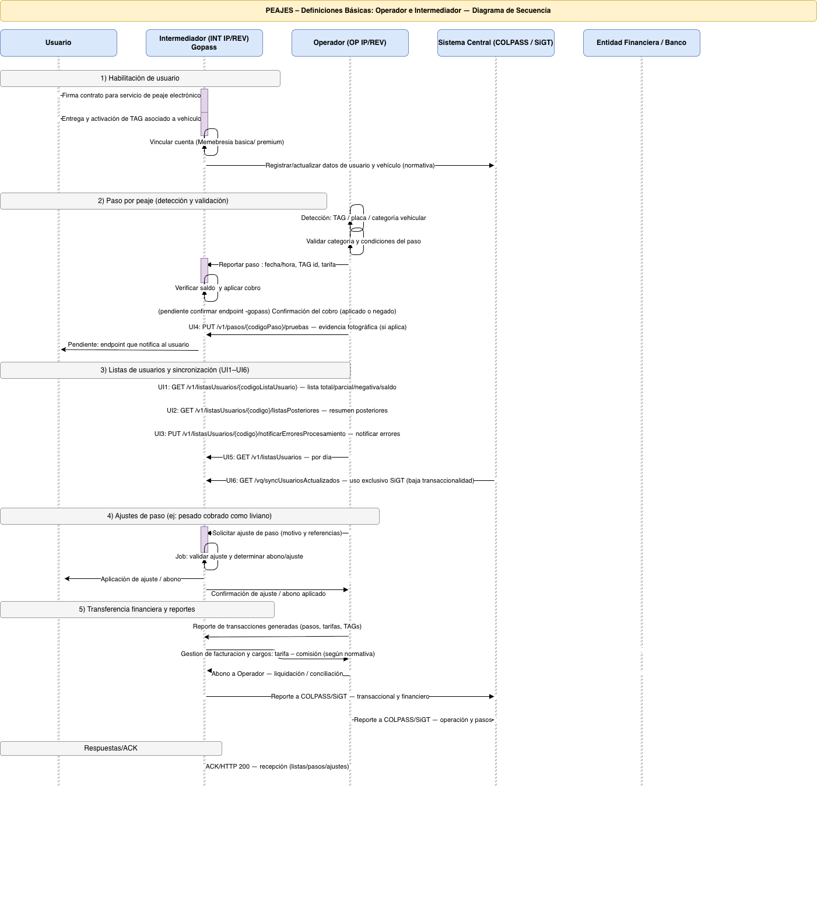

Arquitectura Operativa IP/REV
Modelo funcional de interoperabilidad entre Operador e Intermediador
Modelo funcional de interoperabilidad entre Operador e Intermediador
Operador (OP IP/REV): Administra la infraestructura física del peaje electrónico, carriles, sensores, lectura de TAG y registro de transacciones.
Intermediador (INT IP/REV): Administra usuarios, entrega TAG, gestiona cuentas prepago/pospago y transfiere valores al Operador.
Usuario: Vehículo vinculado contractualmente al Intermediador.
SiGT / COLPASS: Subsistema nacional que valida interoperabilidad y centraliza información normativa.
